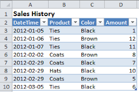
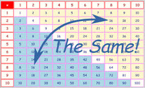

| Name |
Surname |
location |
Favourite Sauce |
| Liam |
Hendricks |
Grassy Park |
Mayo |
| Ismet |
Samsodien |
Ruyterwacht |
Tomato |
| Naasik |
Karmish |
Hanover Park |
Peri Peri |
| Fatima |
Hendricks |
Valhalla Park |
Tarter |
| Rasool |
Booley |
Ronderbosch East |
Mayo |
| Taylor |
Davids |
Bridgetown |
Mayo |
| Raasikh |
Booley |
Athlone |
Sea Food |
| Khanyiso |
Haman |
Delft |
Tomato |
| Nathier |
Manuel |
Lost City |
Danya |
| Justin |
Creighton |
Cape Town |
Tomato |
| Keanan |
Erasmus |
Cape Town |
Sea Food |
| Tabile |
Khume |
Khayelitsha |
Mayo |
| Ebraheem |
>Searle |
Bonteheuwel |
Perinaise |
| Marlon |
Ford |
Grassy Park |
Chilli |
| Elizbeth |
Pollard |
Claremont |
Tomato |
| Imraan |
Meyer |
Grassy Park |
Perinaise |
| Nur |
Brock |
Kensington |
Tikka Sauce |
| Marco |
Paulse |
Ottery |
Peri Peri |
Specific Uses of Tabular Data
- Tables and graphs are visual representations.
- They are used to organise information to show patterns and relationships.
- A graph shows this information by representing it as a shape. Researchers and scientists often use tables and graphs to report findings from their research.
- databases store data in tables so that information can be quickly accessed from specific row
i
